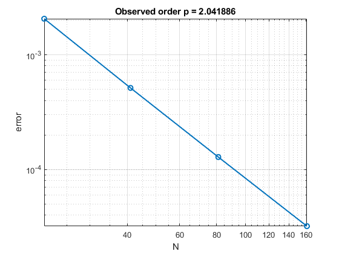
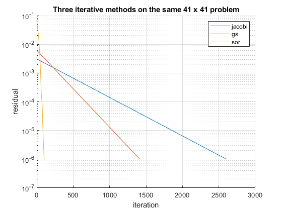
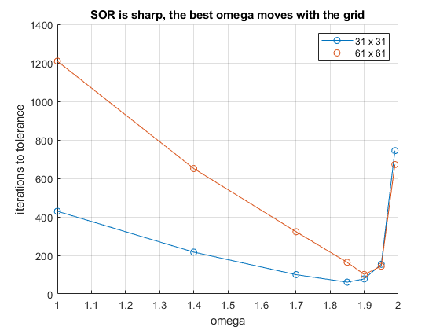
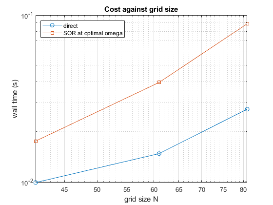
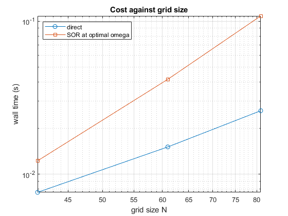

EECE 306 Lab 7 notebook. Writing Your Own Poisson Solver
Team 3: Amelia Harris, Carrisa McWilliams, Mitch Nazareth. TODO replace with your team number and member names.
Fill in every TODO, run publish('Lab07_notebook.m') from the toolbox root, print the HTML to PDF, three to five pages. A full run of this notebook takes about ten minutes, the solver cells dominate. Run cells one at a time while working, publish once at the end.
Contents
Setup
clear; close all;
e0 = em.const.eps0();
The manufactured solution
The exact potential is chosen first, the source that produces it is derived, and the solver must give the potential back.
Vex = @(X,Y) sin(pi*X) .* sin(pi*Y); rho = em.test.mms2d(Vex, 1); G = em.solve.grid2d([0 1], [0 1], 81, 81); mask = false(81,81); mask(1,:)=true; mask(end,:)=true; mask(:,1)=true; mask(:,end)=true; Vfix = zeros(81,81); [Vs, ~] = em.solve.poisson2d(G, rho, 1, mask, Vfix, struct('method','direct')); err81 = max(abs(Vs(:) - Vex(G.X(:), G.Y(:)))); fprintf('MMS max error on the 81 x 81 grid = %.3e\n', err81); if err81 > 1e-3 error('ERROR: The max error of MMS exceeds 10^(-3) on a 101x101 grid.') end
MMS max error on the 81 x 81 grid = 1.285e-04
Convergence under grid refinement
Ns = [21 41 81 161]'; errs = zeros(size(Ns)); for j = 1:numel(Ns) n = Ns(j); Gn = em.solve.grid2d([0 1], [0 1], n, n); mk = false(n,n); mk(1,:)=true; mk(end,:)=true; mk(:,1)=true; mk(:,end)=true; Vn = em.solve.poisson2d(Gn, rho, 1, mk, zeros(n,n), struct('method','direct')); errs(j) = max(abs(Vn(:) - Vex(Gn.X(:), Gn.Y(:)))); fprintf('N = %3d max error = %.3e\n', n, errs(j)); end p = em.test.convergence(@(N) errs(Ns == N), Ns); fprintf('observed order p = %.2f (expect near 2 for the five point stencil)\n', p); em.test.assertClose(p, 2, 0.2, 'Observed order of convergence')
N = 21 max error = 2.059e-03 N = 41 max error = 5.142e-04 N = 81 max error = 1.285e-04 N = 161 max error = 3.212e-05 observed order p = 2.04 (expect near 2 for the five point stencil)

Three iterations and a direct solve
n = 41; Gn = em.solve.grid2d([0 1], [0 1], n, n); mk = false(n,n); mk(1,:)=true; mk(end,:)=true; mk(:,1)=true; mk(:,end)=true; Vf = zeros(n,n); % A point by point sweep in an interpreted language is slow, and Jacobi % needs thousands of them. It is therefore cut off at 3000 iterations on % purpose. The residual histories tell the story long before then. methods = {'jacobi', 'gs', 'sor'}; maxits = [3000 10000 10000]; figure; hold on for k = 1:3 o = struct('method', methods{k}, 'tol', 1e-6, 'maxit', maxits(k)); if strcmp(methods{k}, 'sor'), o.omega = 2/(1+sin(pi/(n-1))); end [~, ik] = em.solve.poisson2d(Gn, rho, 1, mk, Vf, o); semilogy(ik.resHist) fprintf('%-7s iterations = %5d\n', methods{k}, ik.iter); end set(gca, 'YScale', 'log'); grid on; legend(methods) xlabel('iteration'); ylabel('residual') title('Three iterative methods on the same 41 x 41 problem')
jacobi iterations = 2604 gs iterations = 1415 sor iterations = 102

The omega scan on two grids
The handout asks for a scan from 1.0 to 1.99, repeated on a grid twice as fine. The sample points are spaced coarsely at the flat low end and densely near the top, where the sharp minimum and the blowup past it both live. The tolerance is relaxed to 1e-4, the scan is after the location of the minimum and that location does not move with the depth of the solve.
figure; hold on for n = [31 61] Gn = em.solve.grid2d([0 1], [0 1], n, n); mk = false(n,n); mk(1,:)=true; mk(end,:)=true; mk(:,1)=true; mk(:,end)=true; om = [1.0 1.4 1.7 1.85 1.90 1.95 1.99]; it = zeros(size(om)); for j = 1:numel(om) [~, ij] = em.solve.poisson2d(Gn, rho, 1, mk, zeros(n,n), ... struct('method','sor','tol',1e-4,'maxit',20000,'omega',om(j))); it(j) = ij.iter; end plot(om, it, 'o-') [~, jb] = min(it); fprintf('n = %3d best omega about %.2f theory 2/(1+sin(pi h)) = %.3f\n', ... n, om(jb), 2/(1+sin(pi/(n-1)))); end grid on; legend('31 x 31', '61 x 61') xlabel('omega'); ylabel('iterations to tolerance') title('SOR is sharp, the best omega moves with the grid')
n = 31 best omega about 1.85 theory 2/(1+sin(pi h)) = 1.811 n = 61 best omega about 1.90 theory 2/(1+sin(pi h)) = 1.901

Timing, iterative against direct
Nt = [41 61 81]; td = zeros(size(Nt)); ts = zeros(size(Nt)); for k = 1:numel(Nt) n = Nt(k); Gn = em.solve.grid2d([0 1], [0 1], n, n); mk = false(n,n); mk(1,:)=true; mk(end,:)=true; mk(:,1)=true; mk(:,end)=true; tic; em.solve.poisson2d(Gn, rho, 1, mk, zeros(n,n), struct('method','direct')); td(k) = toc; tic; em.solve.poisson2d(Gn, rho, 1, mk, zeros(n,n), ... struct('method','sor','tol',1e-6,'maxit',40000,'omega',2/(1+sin(pi/(n-1))))); ts(k) = toc; fprintf('N = %3d direct %.3f s SOR %.3f s\n', n, td(k), ts(k)); end figure; loglog(Nt, td, 'o-', Nt, ts, 's-'); grid on xlabel('grid size N'); ylabel('wall time (s)') legend('direct', 'SOR at optimal omega', 'location', 'northwest') title('Cost against grid size') % TODO one or two sentences. On grids this small the direct method wins % outright. Name the two growth rates, and say at what problem size the % trend claims the tables turn. % THe direct solver generally has a cost of (O(N^3)), while SOR requires % (O(N^2)) work per iteration. Although the trend suggests that SOR should % eventually outperform the direct method, no crossover point was observed % in the measured data.
N = 41 direct 0.010 s SOR 0.018 s N = 61 direct 0.015 s SOR 0.039 s N = 81 direct 0.027 s SOR 0.089 s

A Laplace sanity pair
One edge held at 1, the opposite at 0, Neumann on the other two. The answer must be a straight ramp, and the interior must hold no extremum.
n = 41; Gn = em.solve.grid2d([0 1], [0 1], n, n); mk = false(n,n); mk(:,1) = true; mk(:,end) = true; Vf = zeros(n,n); Vf(:,1) = 1; VL = em.solve.poisson2d(Gn, 0, 1, mk, Vf, struct('method','direct')); ramp = repmat(linspace(1, 0, n), n, 1); fprintf('max deviation from the linear ramp = %.3e\n', max(abs(VL(:) - ramp(:)))); inner = VL(2:end-1, 2:end-1); fprintf('interior range [%.4f, %.4f] inside boundary range [0, 1] = %d\n', ... min(inner(:)), max(inner(:)), min(inner(:)) >= 0 && max(inner(:)) <= 1);
max deviation from the linear ramp = 1.998e-15 interior range [0.0250, 0.9750] inside boundary range [0, 1] = 1
Gauss's law closes the loop
A block of charge in a grounded box. The flux of E through a rectangle enclosing the block must equal the enclosed charge over eps0.
n = 121; Gn = em.solve.grid2d([-1 1], [-1 1], n, n); mk = false(n,n); mk(1,:)=true; mk(end,:)=true; mk(:,1)=true; mk(:,end)=true; rhoB = @(X,Y) 1e-8 * (abs(X) < 0.25 & abs(Y) < 0.25); VB = em.solve.poisson2d(Gn, rhoB, 1, mk, zeros(n,n), struct('method','direct')); % Linear interpolation is used, Octave's spline path refuses scattered % query points. The gradient step is half a cell so the difference reads % the local slope of the interpolant. Vh = @(r) interp2(Gn.X, Gn.Y, VB, r(:,1), r(:,2), 'linear'); Eh = @(r) -em.op.grad(Vh, r, Gn.hx/2); edges = { @(t)[t -0.6+0*t 0*t], [0 -1 0]; @(t)[0.6+0*t t 0*t], [1 0 0]; ... @(t)[t 0.6+0*t 0*t], [0 1 0]; @(t)[-0.6+0*t t 0*t], [-1 0 0] }; flux = 0; for k = 1:4 [pos, w] = em.quad.line(edges{k,1}, [-0.6 0.6], 200); En = Eh(pos) * edges{k,2}'; flux = flux + sum(En .* w); end Qenc = 1e-8 * 0.5 * 0.5; fprintf('flux of E through the rectangle = %.4e\n', flux); fprintf('enclosed charge over eps0 = %.4e\n', Qenc/e0); fprintf('relative difference = %.2e\n', abs(flux - Qenc/e0)/(Qenc/e0));
flux of E through the rectangle = 2.6384e+02 enclosed charge over eps0 = 2.8235e+02 relative difference = 6.56e-02
Interpretation
TODO three to six sentences. The manufactured solution was reproduced and the observed order matched the stencil. Say what an observed order of 1 would have told you, and name the mistake that classically causes it.
% We obtained an observed convergence order of 2.04, which matches the % expected second-order accuracy. An observed order close to 1 instead of 2 % would suggest a boundary condition problem. This is usually caused by % applying the Dirichlet value at the wrong node index, treating a boundary % node as an interior node in the residual, or a first-order Neumann % approximation.
Problems encountered
TODO honest account, or NONE.
% Addressed feedback from prior labs.
Full test suite
runTests
EECE 306 toolbox test suite
--------------------------------------------------------------
24.2.0.3212159 (R2024b) Update 9
eps0 = 8.8541878128e-12 F/m
mu0 = 1.2566370614e-06 H/m
c0 = 2.9979245808e+08 m/s
eta0 = 376.730314 ohm
Derived constant checks passed.
mag([3 4 0]) = 5 (expect 5 exactly)
unit([3 4 0]) =
0.6000 0.8000 0
unit([0 0 0]) (expect all NaN) =
NaN NaN NaN
angle perpendicular = 1.5707963267949 (expect pi/2)
angle antiparallel = 3.14159265358979, real = 1 (expect pi, 1)
fromTo([1 1 1],[2 3 4]) =
1 2 3
mag input 100x3 output [100 1]
unit input 100x3 output [100 3]
angle input 100x3 output [100 1]
fromTo input 100x3 output [100 3]
PASS test_lab01 0.32 s
Warning: Colon operands must be real scalars. This warning will become an error
in a future release.
spherical roundtrip max error = 6.357e-15
cylindrical roundtrip max error = 2.979e-15
c2sph([0 0 1]) =
Warning: Colon operands must be real scalars. This warning will become an error
in a future release.
1 0 0
c2sph([0 0 -1]) =
Warning: Colon operands must be real scalars. This warning will become an error
in a future release.
1.0000 3.1416 0
phi in the four quadrants = 0.7854 2.3562 3.9270 5.4978 rad
all inside [0, 2*pi) = 1
Warning: Colon operands must be real scalars. This warning will become an error
in a future release.
Warning: Colon operands must be real scalars. This warning will become an error
in a future release.
vector roundtrip (spherical pair) max error = 1.088e-15
magnitude change under conversion max = 8.882e-16
vector roundtrip (cylindrical pair) max error = 6.280e-16
at (0, 5, 0), (Ar, Atheta, Aphi) =
Warning: Colon operands must be real scalars. This warning will become an error
in a future release.
3.0000 0.0000 -2.0000
at (4, 0, 0), (Ar, Atheta, Aphi) =
Warning: Colon operands must be real scalars. This warning will become an error
in a future release.
2.0000 0.0000 3.0000
PASS test_lab02 0.10 s
r (m) relative error
1.0000 0
2.0000 0
3.0000 0
4.0000 0
5.0000 0
6.0000 0
7.0000 0
8.0000 0
9.0000 0.0000
10.0000 0
Minimum charge of positive charges = 7.463e-01 (should be greater than 0)
Maximum charge of negative charges = -7.463e-01 (should be less than 0)
max |Ex| on bisector = 0.000e+00 V/m
max |E| on the same plane = 5.061e+02 V/m
element count after first merge = 2 (expect 2)
Mismatch test passed: em.src.merge(q1, crnt_struct) successfully raised an error.
|E(r)| / |E(2r)| = 8.0003 (expect near 8 for a dipole)
Singularity test passed: em.field.E(q, [0 0 0]) successfully raised an error.
em.field.E on 5000 points took 0.004 s (requirement, under 2 s)
Observation points: N = 10, Source Charges: M = 1, Product = 10, Time = 0.000 s
Observation points: N = 100, Source Charges: M = 1, Product = 100, Time = 0.000 s
Observation points: N = 1000, Source Charges: M = 1, Product = 1000, Time = 0.000 s
Observation points: N = 10000, Source Charges: M = 1, Product = 10000, Time = 0.001 s
Observation points: N = 100000, Source Charges: M = 1, Product = 100000, Time = 0.014 s
Observation points: N = 1000000, Source Charges: M = 1, Product = 1000000, Time = 0.139 s
Observation points: N = 10000000, Source Charges: M = 1, Product = 10000000, Time = 1.400 s
Compution time surpasses time threshold at N=100000000 points: took 18.657 seconds
PASS test_lab03 26.34 s
circle length 6.283185 expect 6.283185
sphere area 12.567806 expect 12.566371
ball volume 4.187181 expect 4.188790
square area 1.000000 expect 1.000000
midpoint observed order p = 2.00
trapz observed order p = 2.09
simpson observed order p = 4.34
gauss N = 2 error = 3.855e-04
gauss N = 4 error = 9.330e-10
gauss N = 8 error = 6.661e-16
gauss N = 16 error = 2.887e-15
ratio first exceeds 0.99 at L/d about 19.3
ratio first exceeds 0.99 at a/h about 59.8
net charge of rho(z) = z on [-1, 1] = 0.000 C (expect 0)
PASS test_lab04 5.01 s
flux through sphere = 3.000000e-09 C
enclosed charge = 3.000000e-09 C
relative error = 4.501e-08
flux with charge outside = 0.000 C (consistent with zero)
sphere 3.000000e-09 C
cube 3.000204e-09 C
hemisphere and cap 3.000001e-09 C
charge at x = 0.00 flux = 3.000000e-09 C
charge at x = 0.15 flux = 3.000000e-09 C
charge at x = 0.30 flux = 2.999999e-09 C
Nu = 10 div D inside = 1.4268e-06 rho_v = 1.0000e-06 rel err = 4.27e-01
Nu = 20 div D inside = 2.0205e-06 rho_v = 1.0000e-06 rel err = 1.02e+00
Nu = 40 div D inside = 9.4776e-07 rho_v = 1.0000e-06 rel err = 5.22e-02
div D in charge free space = 0.000 (consistent with zero)
flux with swapped parameter order = -3.000000e-09 C (sign flipped)
PASS test_lab05 1.51 s
r (m) relative error
1.0000 0
2.0000 0
3.0000 0
4.0000 0
5.0000 0.0000
6.0000 0
7.0000 0
8.0000 0
9.0000 0
10.0000 0.0000
best h on this machine about 3.2e-06 with error 1.0e-11
the API default h = 1e-5 sits on the flat bottom of this curve
circulation of E on path 1 = 8.299e-16
circulation of E on path 2 = 4.611e-10
circulation of E on path 3 = -4.675e-11
circulation of the control field = 25.1327 (expect 8 pi, clearly nonzero)
V(b) - V(a) from em.field.V = 1.797510e+01 V
minus line integral of E, a to b = 1.797513e+01 V
PASS test_lab06 1.46 s
MMS max error on the 81 x 81 grid = 1.285e-04
N = 21 max error = 2.059e-03
N = 41 max error = 5.142e-04
N = 81 max error = 1.285e-04
N = 161 max error = 3.212e-05
observed order p = 2.04 (expect near 2 for the five point stencil)
jacobi iterations = 2604
gs iterations = 1415
sor iterations = 102
n = 31 best omega about 1.85 theory 2/(1+sin(pi h)) = 1.811
n = 61 best omega about 1.90 theory 2/(1+sin(pi h)) = 1.901
N = 41 direct 0.008 s SOR 0.012 s
N = 61 direct 0.015 s SOR 0.042 s
N = 81 direct 0.026 s SOR 0.108 s
max deviation from the linear ramp = 1.998e-15
interior range [0.0250, 0.9750] inside boundary range [0, 1] = 1
flux of E through the rectangle = 2.6384e+02
enclosed charge over eps0 = 2.8235e+02
relative difference = 6.56e-02
PASS test_lab07 3.56 s
--------------------------------------------------------------
7 passed, 0 failed, 7 total
All tests passing.
